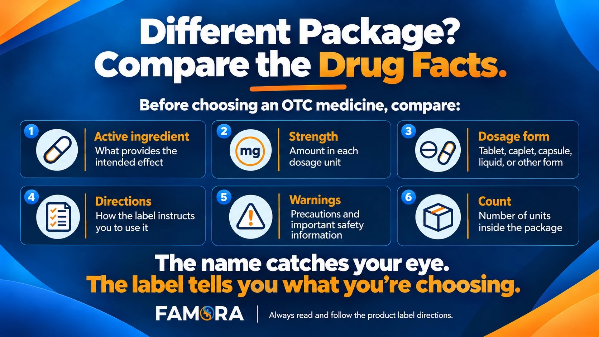

A familiar package can make an OTC product feel like the obvious choice. Your medicine cabinet, however, is not impressed by famous colors or catchy packaging. It cares about what is actually inside the bottle.
When comparing generic vs. brand-name medicine, shoppers should look beyond the name on the front. The active ingredient, strength, dosage form, uses, directions, warnings, and product count provide much more useful information.
The goal is not to assume that every product with similar packaging is identical. It is to use the Drug Facts label to make a clear, informed comparison.
Quick Answer: Are Generic Medicines the Same as Brand-Name Medicines?
An FDA-approved generic drug is required to have the same active ingredient, strength, dosage form, route of administration, and clinical benefit as its brand-name counterpart. Its appearance, packaging, inactive ingredients, and price may still differ.
For OTC shoppers, the practical lesson is simple: never compare products by name or packaging alone. Read the Drug Facts label and confirm that the important details match.
The FDA’s Generic Drug Facts guide explains the standards FDA-approved generic drugs must meet.
What Is the Difference Between Generic and Brand-Name Medicine?
A brand-name medicine is generally marketed under a proprietary name. A generic version is usually identified by its active ingredient and is designed to provide the same clinical benefit as the corresponding brand-name drug when approved as its generic equivalent.
There may still be visible differences. The tablets might have another color or shape. The bottle, count, inactive ingredients, and label design may also vary.
Instead of asking only whether the package looks familiar, ask:
Do the active ingredient, strength, dosage form, uses, directions, and warnings match what I need?
Generic vs. Brand-Name OTC Medicine: What to Compare
| What to compare | What it tells you |
|---|---|
| Active ingredient | The ingredient responsible for the intended effect |
| Strength | The amount of active ingredient in each dosage unit |
| Dosage form | Whether it is a tablet, caplet, capsule, liquid, or another form |
| Uses | The symptoms or conditions listed on the label |
| Directions | How the label instructs consumers to use the product |
| Warnings | Precautions, interactions, and important safety information |
| Inactive ingredients | Other ingredients used in the formulation |
| Count | How many tablets, caplets, or units the package contains |
| Expiration and seal | Whether the product is current and the package is intact |

Compare the Drug Facts—not only the name or package—before choosing an OTC medicine.
Start With the Active Ingredient
The active ingredient should be the first comparison point. It identifies the substance responsible for the intended effect of the medicine.
Two products can use similar front-label language while containing different active ingredients. The opposite can also happen: two packages may look completely different but list the same active ingredient.
Do not rely only on phrases such as “allergy relief” or “pain relief.” Locate the Active ingredient section of the Drug Facts panel.
Matching the active ingredient is an important first step, but it does not complete the comparison.
Confirm the Strength and Dosage Form
Next, check the strength. A product containing the same active ingredient at a different strength is not the same comparison.
The dosage form also matters. A tablet, chewable tablet, capsule, liquid, or enteric-coated tablet may have different characteristics and label directions.
For an example of how these details appear on an OTC label, read Famora’s guide to Cetirizine HCl 10 mg in plain English.
Compare Uses, Directions, and Warnings
The front of the package introduces the product. The Drug Facts panel provides the information needed to evaluate it.
The Uses section explains what the product is labeled to temporarily treat or relieve. The Directions provide age guidance, amounts, timing, and other instructions. The Warnings identify precautions, possible interactions, circumstances in which the product should not be used, and when to consult a healthcare professional.
Even when you recognize an active ingredient, read the complete label. Product formulations can change, and similarly named products may contain different ingredients.
Do Inactive Ingredients Matter?
Inactive ingredients do not provide the intended therapeutic effect, but they are still part of the product formulation. They can include binders, coatings, colors, or flavoring ingredients.
People with allergies, sensitivities, dietary restrictions, or questions about a particular ingredient should review this section carefully and consult a healthcare professional when necessary.
A different tablet color does not automatically mean a different active ingredient—but it should never replace checking the label.
Compare Count and Household Fit
After confirming the medical information, compare the package count.
Count does not determine whether one medicine is more appropriate than another. It simply tells shoppers how many tablets, caplets, or other units the package contains.
A lower shelf price may come with a smaller count, while a larger bottle may reduce how frequently a household needs to restock. Compare the current price per unit when possible, but never let package size override the active ingredient, directions, warnings, or expiration date.
The best value is not automatically the biggest bottle. It is a correctly labeled product that fits the household’s needs and will be stored and used responsibly.
Are Store-Brand Medicines the Same as Name Brands?
Sometimes a store-brand or differently branded product contains the same active ingredient and strength as a familiar name-brand product. Sometimes it does not.
Terms such as “store brand,” “generic,” or “alternative” do not prove equivalence by themselves. Compare the Drug Facts panels directly.
Review:
- Active ingredient
- Strength
- Dosage form
- Uses
- Directions
- Warnings
- Inactive ingredients
- Package count and expiration date
If anything is unclear—or if you take other medicines, have a health condition, are pregnant or breastfeeding, or are choosing a product for a child—consult a healthcare professional.
A 60-Second OTC Comparison
Before placing an OTC product in your cart, ask:
- Is this the active ingredient I intended to purchase?
- Is the strength the same?
- Is the dosage form appropriate?
- Do the listed uses match what I am looking for?
- Have I read the complete directions and warnings?
- Does the label mention a precaution that applies to me?
- How many tablets or caplets are included?
- Is the tamper-evident seal intact?
- Is the product within its expiration date?
That short review tells you more than packaging recognition ever will.
Final Takeaway
When comparing brand-name vs. generic drugs or OTC medicines, start with the facts—not the familiarity of the box.
Review the active ingredient, strength, dosage form, uses, directions, warnings, inactive ingredients, count, expiration date, and package seal. These details help you understand what you are purchasing and whether it fits your household.
Frequently Asked Questions
FDA-approved generic medicines must have the same active ingredient, strength, dosage form, route of administration, and clinical benefit as their brand-name counterparts. Packaging, appearance, inactive ingredients, and price may differ.
An FDA-approved generic drug must demonstrate that it works in the same way and provides the same clinical benefit as the corresponding brand-name medicine.
Not automatically. Some contain the same active ingredient and strength, while others may differ. Compare the Drug Facts panels instead of relying on the package name or design.
Compare the active ingredient, strength, dosage form, uses, directions, warnings, inactive ingredients, count, expiration date, and tamper-evident packaging.
Not necessarily. Products may differ in strength, dosage form, directions, warnings, inactive ingredients, count, and other label details.
This content is for general educational purposes and is not medical advice. Always read and follow the complete product label directions.